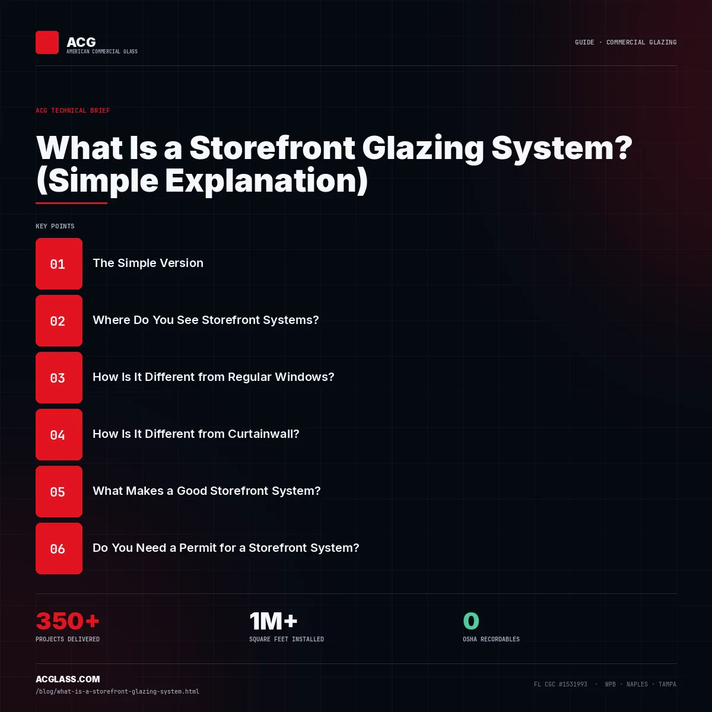

Commercial storefront systems.
Storefront is the workhorse of commercial glazing - center-set aluminum framing for retail, restaurant, lobby and ground-floor openings. ACG installs impact-rated and non-impact storefront across Florida, with HVHZ NOA assemblies in Miami-Dade and Broward and butt-glazed and all-glass entry variants for signature fronts.

What a storefront system is.
Storefront is a center-set aluminum glazing system - typically 1¾″ or 2″ deep - that sits on the floor slab and transfers wind load downward through its sill. Glass is held by gaskets and snap-on stops. It weeps at the sill, spans a single story, and is the most economical way to glaze a ground-floor commercial opening. American Commercial Glass installs both impact-rated and non-impact storefront across Florida, including HVHZ-approved assemblies carrying active Miami-Dade and Broward NOAs, under CSI spec section 08 41 13.
Storefront stops where curtain wall starts.
Five ways to build a storefront.
Retail & restaurant
Strip centers, shopping plazas, restaurant fronts and ground-floor commercial bays.
Office & medical
Office tower lobbies and vestibules, small office buildings, bank branches and medical offices.
Showroom
Auto dealership showrooms and any elevation where the merchandise is the facade.
Systems we run.
Design pressures are tested maximums. Project-specific verification is required on every opening.
Storefront ACG has delivered.

Get the system right before the bid.
Use storefront when
The assembly is one story and roughly 10 ft or less, wind load is moderate (L/175 deflection is achievable), and a centerline aesthetic is acceptable. It is the lower-cost choice for ground- and second-floor elevations.
Move to curtain wall when
The assembly spans floor-to-floor, exceeds the height limit of deep storefront profiles, or the architect wants a flush structural-silicone-glazed plane. Curtain wall costs more but meets higher air, water and structural performance.
HVHZ changes the assembly
In Miami-Dade and Broward, storefront must be an NOA-listed impact assembly - laminated glass, reinforced framing, tested anchorage. ACG installs NOA-listed impact storefront and documents the approval on submittal.

Related documents.
Frequently asked questions.
What’s the lead time for commercial storefront in 2026?
6-10 weeks material lead time. Installation 2-4 weeks for a typical 5,000-8,000 SF assembly.
Can storefront be impact-rated for HVHZ?
Yes. ACG installs Miami-Dade NOA-listed impact storefront from Euro-Wall and ESWindows.
What’s the difference between butt-glazed and standard storefront?
Butt-glazed replaces vertical mullions with structural silicone joints between lites - the look is frameless.
What is the difference between a curtain wall and a storefront?
Storefront is a single-span system anchored at head and sill, typically below the fourth floor, and weeped at the sill. Curtainwall spans multiple floors, weeps each lite separately, and meets higher air, water, and structural performance. American Commercial Glass installs both, matching the system to building height and performance requirements.
How tall can a storefront system go?
Most aluminum storefront systems run to frame heights of about 10 to 12 feet, with deeper profiles reaching roughly 14 feet, and are typically used below the fourth floor. For taller elevations, curtainwall is the correct system. American Commercial Glass specifies the right system for each elevation’s height and wind exposure.
Is curtainwall more expensive than storefront?
Generally yes. Curtainwall costs more in materials and labor because it spans multiple floors and meets higher air, water, and structural performance, while storefront is the lower-cost choice for ground- and second-floor elevations. American Commercial Glass specifies whichever system fits the building’s height, exposure, and performance needs.
The rest of the Division 08 set.
Have a storefront package to price?
Send drawings - ACG reviews system selection, code path and budget, and returns a scoped proposal in 48 hours.